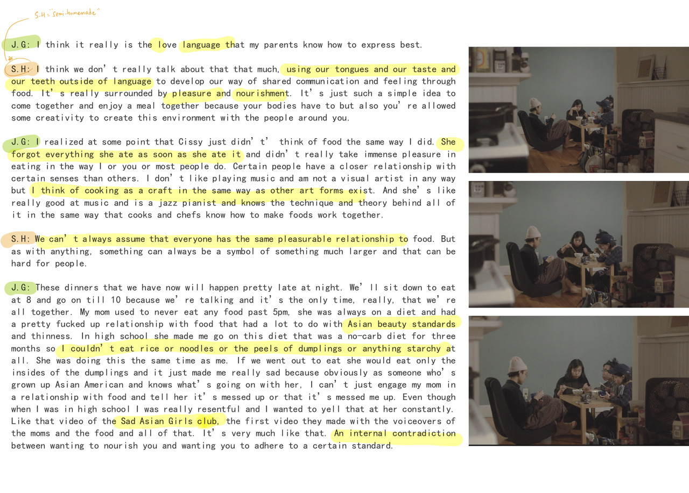

semi-homemade (2018)
a print publication on food and home-making by cj park, andy li and lynn tachihara
sold at Printed Matter Fair at MOMA PS1, Boston Art Book Fair
issue i
considers “food porn” and the contours of consumption. “food porn” is loaded, with its connections to empowerment through alimentary pleasure and body positivity, and its contributions to conversations on artificiality, impossibility, and “unhealth.”

issue ii
investigates food as a pathway to home, featuring dialogues with second-generation chinese-americans from the brown-risd community


